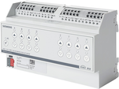
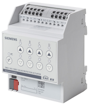
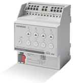
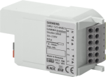
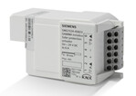
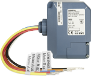
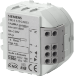
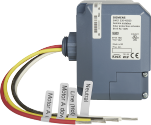
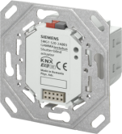
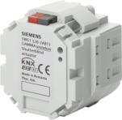

Blinds actuators product description
Shutter / blind actuators are KNX device with one or more relay outputs. The bus is connected via a bus terminal block. The shutter / blind actuators may be used to control blinds, shutters, awnings, windows, or doors.
 | N 543D51, Blinds actuator
Order number: 5WG1 543-1DB51 Download data sheet: 5WG15431DB51 |
 | N 543D31, Blinds actuator
Order number: 5WG1 543-1DB31 Download data sheet: 5WG15431DB31 |
 | N 545D31, Solar protection actuator
Order number: 5WG1545-1DB31 Download data sheet: 5WG1 545-1DB31 |
 | RL 521/23, Shutter/blind actuator
Order number: 5WG1 521-4AB23 Download data sheet: 5WG15214AB23 |
 | RL 524D23, Solar protection actuator
Order number: 5WG1524-4DB23 Download data sheet: 5WG1524-4DB23 |
 | JB 521C23, Solar protection actuator
Order number: 5WG1 521-4CB23 Download data sheet: 5WG15214CB23 |
 | RS 520/23, Shutter / blind actuator (RS module)
Order number: 5WG1 520-2AB23 Download data sheet: 5WG15202AB23 |
 | JB 520C23, Solar protection actuator
Order number: 5WG1 520-4CB23 Download data sheet: 5WG15204CB23 |
 | UP 520/03, Shutter / blind actuator with mounting frame
Order number: 5WG1 520-2AB03 Download data sheet: 5WG15202AB03 |
 | UP 520/13, Shutter / blind actuator
Order number: 5WG1 520-2AB13 Download data sheet: 5WG15202AB13 |